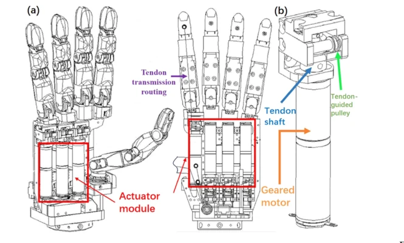
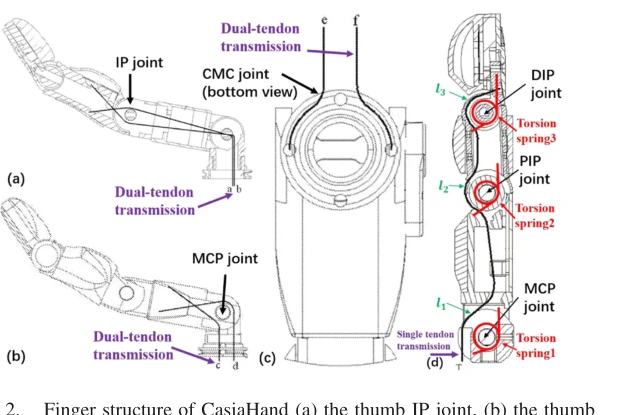
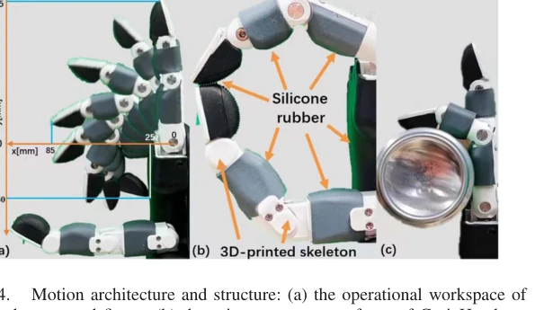
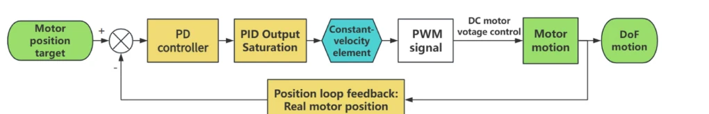
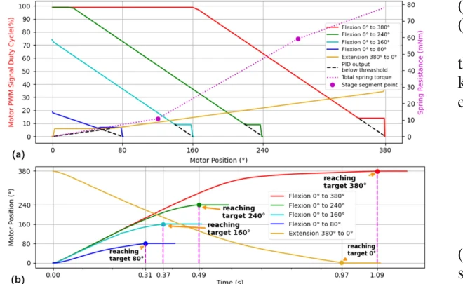
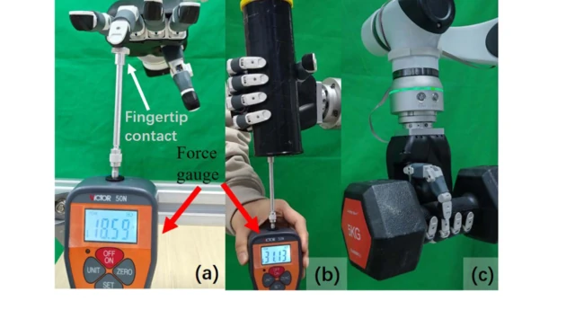
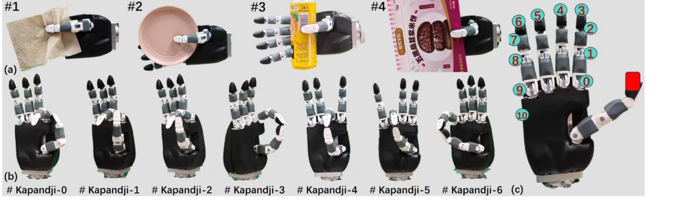
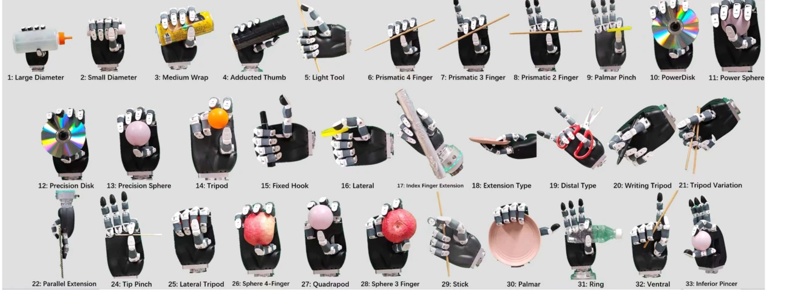
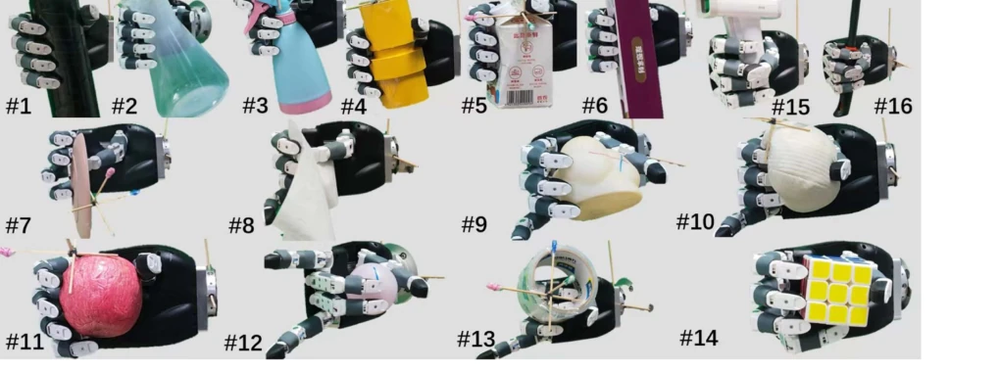

Palm-integrated tendon drive
Seven geared motors are packaged inside the palm, shortening tendon paths and enabling a compact anthropomorphic form factor.
A humanoid-scale robotic hand that balances structural simplicity and functional dexterity through integrated tendon actuation, under-actuated non-thumb fingers, a fully actuated thumb, and a task-based benchmark for realistic hand dexterity evaluation.
IEEE Robotics and Automation Letters (RA-L), Vol. 10, No. 5, May 2025
Overview
CasiaHand is a 15-DoF anthropomorphic hand driven by seven palm-integrated actuators. Tendon transmission reduces distal mass, while a hybrid motion architecture gives the thumb independent actuation and couples the three joints of each non-thumb finger through a single tendon and torsion springs. The design targets humanoid-scale deployment without sacrificing the grasp diversity needed for everyday manipulation.

CasiaHand architecture: seven motors and tendon-routing modules are integrated inside the palm.

Hybrid motion architecture: a fully actuated thumb and tendon-spring under-actuated non-thumb fingers.
Design & Control
Seven geared motors are packaged inside the palm, shortening tendon paths and enabling a compact anthropomorphic form factor.
The three thumb joints are independently driven, while each non-thumb digit uses one tendon across three joints with spring return.
Soft silicone contact surfaces and torsion-spring joints provide passive adaptation when fingers encounter objects during enclosure.
The non-thumb fingers intentionally trade independent joint control for mechanical simplicity: one tendon flexes MCP, PIP, and DIP joints, while torsion springs shape the bending sequence and restore extension. This allows the finger to conform passively to object geometry.
To improve control of the motor-tendon-spring system, the position loop adds a constant-velocity element when the controller output falls below a spring-resistance-dependent threshold. The reported full finger flexion reaches 380° of motor rotation in 1.09 s while reducing tremor and overshoot near target positions.

Operational workspace, silicone-covered contact surfaces, and passive compliance of the under-actuated finger.

Position-control loop with the added constant-velocity element.

Motor-position dynamics and measured finger motion under the control strategy.
Overall Dexterity
The hand is designed to support anthropomorphic grasp postures while retaining practical load capacity. Reported measurements include a maximum fingertip force of 16.43 N for non-thumb digits, 11.60 N for the thumb, an average maximum grasp force of 30.42 N, and a demonstrated 5 kg payload using a hook grasp.

Fingertip-force measurement, cylindrical grasp-force test, and 5 kg payload demonstration.
This section presents CasiaHand as a complete robotic end-effector rather than only a mechanism. The two video slots below are reserved for a general dexterity montage and the payload test. Copy the exact filenames into the local video folder and the placeholders will automatically become playable videos without editing this HTML.
Dexterity Evaluation for Under-Actuated Dexterous Hand
The paper proposes a task-based benchmark organized hierarchically around three perspectives: thumb functionality, multi-DoF coordination, and whole-hand interaction with objects. The progression moves from a critical local component, to coordinated grasp posture generation, and finally to dynamic stability in realistic manipulation.
Thumb performance is assessed with a gripping test and the Kapandji benchmark. In the gripping test, the thumb clamps four objects of different thicknesses against the palm and the hand is rotated around three Cartesian axes to challenge grasp stability. The Kapandji test evaluates opposition and range of motion across 11 target gestures.

Thumb gripping tasks and achieved Kapandji positions.
Coordination is evaluated using the 33-class GRASP taxonomy as a reference for human grasp postures. CasiaHand completes 32 of 33 grasp types; the missing #23 adduction grip is attributed to the absence of lateral swing DoF in the non-thumb digits.

The 33 reference grasp classes used to evaluate multi-DoF coordination.
Whole-hand performance is tested on 16 objects spanning cylinders, thin objects, irregular bodies, spheres, rings, and tools. During each grasp, the arm executes a spatial trajectory containing rotations and translations so the hand-object system experiences changing gravity directions. Stability, contact sections, and contact force are recorded rather than relying on a purely static grasp pose.

Human-like grasp postures across the 16-object interaction set.
Key Results
Publication
D. Yan, P. Wang, T. Zhang, X. Wang, Y. Wang, Z. Wang, Y. Luo, Y. Huang, and G. Deng, “CasiaHand: Design and Evaluation of a 15-DoF Tendon-Driven Anthropomorphic Robotic Hand,” IEEE Robotics and Automation Letters, vol. 10, no. 5, pp. 5026–5033, 2025.
DOI: 10.1109/LRA.2025.3555161 ↗